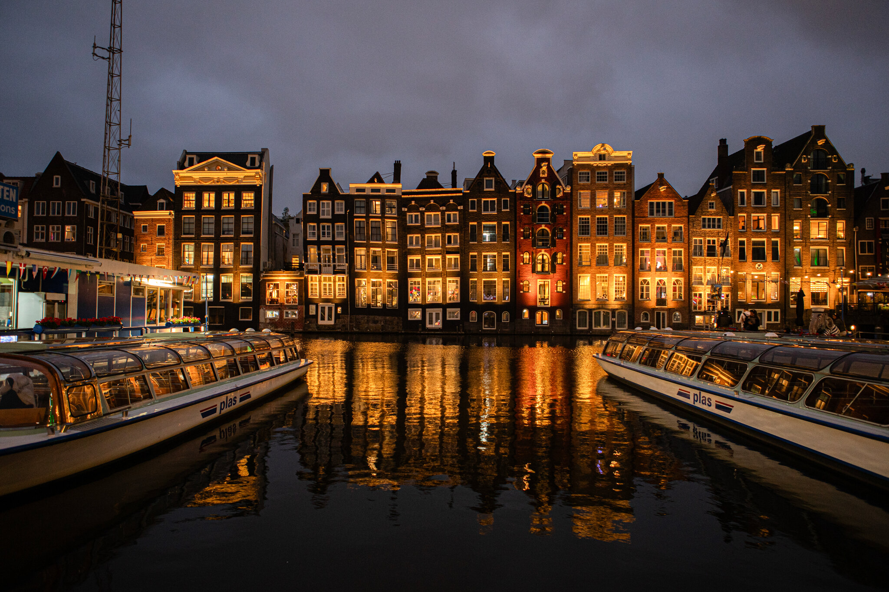

Amsterdam is the capital city of the Netherlands, known for its artistic heritage, elaborate canal system, and narrow houses with gabled facades, reminiscent of the city's 17th-century Golden Age. Its Museum District houses the Van Gogh Museum, works by Rembrandt and Vermeer at the Rijksmuseum, and modern art at the Stedelijk. Cycling is key to the city's character, and there are numerous bike paths.
Plan your trip to Amsterdam and explore the rich cultural heritage, picturesque canals, and vibrant atmosphere of this beautiful city!